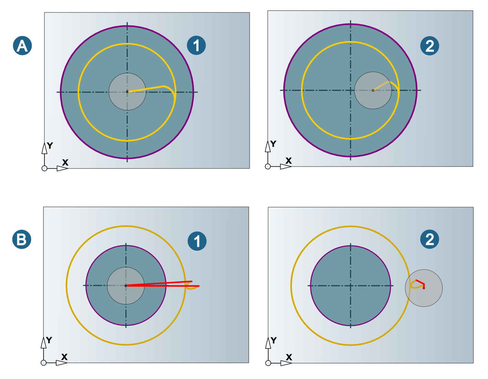
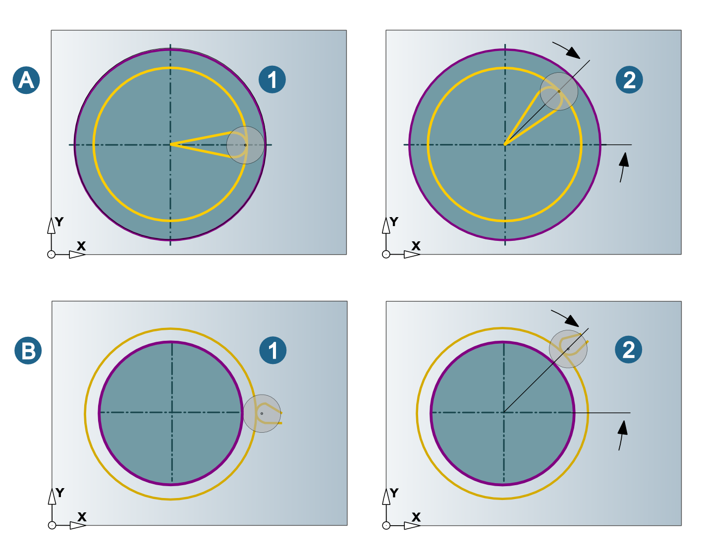
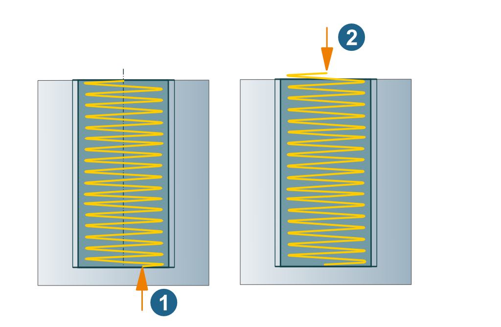

Roughing / Finishing
Lateral infeed
Constant chip section (1): The same quantity of material (chip section) is removed with each infeed movement.
Constant lateral infeed (2): Infeed with constant lateral infeed value.
Roughing passes: Define the number of roughing passes.
Finish allowance: Material that is removed during final finishing.
Number of spring passes: Number of spring passes without lateral infeed.
 |
Axial infeed
Use Thread/step to define the number of threads per step.
(1) Define a value of 0, if the tool can machine the thread in one single revolution at the defined depth.
(2) Define a value of 1, if the tool can machine a single thread profile at each revolution. A continuous spiral is applied along the complete thread height.
(3) The tool can machine several thread profiles at each revolution. Define the number of threads profiles (greater than 1) generated by the tool at each revolution.
 |
Path compensation
Center path (A): hyperMILL calculates a toolpath that can be machined using the specified tool without collisions. Stock allowances in XY are taken into account.
The center path (calculated by hyperMILL) corresponds to the NC path.
Select this function if your controller does not offer the path compensation feature.
Note
The tool diameters must be adhered to exactly during machining. If tool diameters vary, the NC program has to be corrected.
Compensated path: hyperMILL calculates a toolpath that can be machined using the specified tool without collisions. Stock allowances in XY are taken into account.
The contour (selected in hyperMILL) corresponds to the NC path.
Compensated center path: Only available if enabled for the job list on the Setup dialog page. hyperMILL calculates a toolpath that can be machined using the specified tool without collisions, including the path compensation.
The center path (calculated by hyperMILL) corresponds to NC path.
Warning
The Compensated center path function is not supported by all postprocessors. Please check the postprocessor prior to using the function.
Additional options
Start at center (1): Enable if the tool movement should start at the center of the drill hole. Otherwise, the tool movement will start before the macro movement (2).
(A) Internal thread, (B) External thread.
|  |
Start angle: Enable if the tool should take an angle into account. Reference for the start angle is the X axis of the job frame.
(1) Start angle = 0°, (2) Start angle = 45°
(A) Internal thread, (B) External thread.
|  |
Allow incomplete revolution (1): Enable if incomplete revolutions are permitted. If the option is not enabled, the tool movement will begin above the drill hole in order to ensure a complete revolution.
|  |